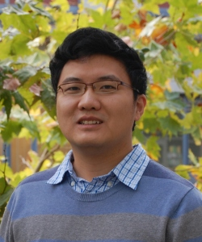

Chen Qian
Professor
Director of Graduate Programs
Department of Computer Science and Engineering
Jack Baskin School of Engineering
University of California Santa Cruz
Graduate Director of CSE, 2023-
Email: cqian12 AT ucsc Dot edu
Office: 231 E2
Phone #: 831-459-5302
For potential PhD applicants:
I usually only accept one or two new PhD students every year -- unless there are multiple equally-outstanding students. I have no requirements on whether you have a master degree or published papers, but you need to ensure that you are truely interested in doing research and want to become a leading researcher in your research field upon getting your PhD. In fact, every of my former PhD students became a top researcher.
11/2024, En4S received Best Paper Award of ACM SoCC 2024. Congratulations to Minghao and Heiner!
04/2024, Xiaoxue Zhang graduated her PhD and joined University of Nevada, Reno, as a tenure-track faculty. Congratulations!
07/2023, Organizing the 1st SIGCOMM workshop on Quantum Networks and Distributed Quantum Computing (QuNet). Please consider attending this workshop.
05/2023, Haofan Cai graduated her PhD and joined University of Hawaii at M¨¡noa as a tenure-track faculty. Congratulations!
06/2022, Minmei Wang graduated her PhD and will join University of Connecticut as a tenure-track faculty. Xiaofeng Shi graduated his PhD and will join AT&T Labs - Research as a senior inventive scientist. Congratulations!
Winter 2025, Fall 2023, Fall 2021, Fall 2018, Fall 2017: CMPE252A: Computer Networks
Winter 2021, Sping 2018: CMPE259 Sensor Networks and Internet of Things
Winter 2020, Winter 2019, Sping 2017, : CMPE253 Network Security
Spring 2024, Spring 2023, Fall 2020, Fall 2019, Spring 2019, Winter 2017, W2018: CSE150 Introduction To Computer Networks
Winter 2023, Winter 2022: CSE107 Probability and Statistics for Engineers
Spring 2022: CSE290N Topics in Computer Performance
I am a Professor (Associate Professor 2020-2022, Assistant Professor 2016-2020) in the Department of Computer Science and Engineering at University of California Santa Cruz. I have been serving as the Graduate Director since 2023. I primarily work on the fundamental problems of computer networks, systems, and security. I received the NSF CAREER Award in 2018. I am a senior member of ACM and IEEE.
I was an Assistant Professor in the Department of Computer Science at University of Kentucky during 2013-2016.
I received my Ph.D. in Computer Science from University of Texas at Austin in 2013. My advisor was Simon S. Lam, meaning I am a part of the Leonard Kleinrock's family tree. I am the recipient of the James C. Browne Graduate Fellowship in 2012 (list of Browne Fellowship awardees for 2001-2012). I got my M.Phil. from Department of Computer Science and Engineering at Hong Kong University of Science and Technology, where I worked with Prof. Lionel M. Ni, and also had close collaboration with Prof. Yunhao Liu. I received my Bachelor's degree (highest honor) from Department of Computer Science, Nanjing University in 2006, under the supervision of Prof. Jiafu Xu and Prof. Fangmin Song.
I was born in Suzhou, Jiangsu, China.
Computer networking, Internet of Things, Network Security, Edge and Cloud Computing, SDN/NFV, RFID, Mobile/Pervasive Computing, Quantum Networks, and Stroage Systems
NSF Funded Projects: ExpandQISE-2426940, CNS-2426031, CNS-2420632, CNS-2322919, CNS-2114113, CNS-1717948 (IoT), CNS-1750704 (NSF CAREER Award), CPS-1932447, CNS-1464335
- If you only have time to take a look at a few papers:
[SIGCOMM'20] Concurrent Entanglement Routing for Quantum Networks: Model and Designs. [Code of Quantum Entanglement Routing] [pdf] [video]
-- The first quantum network routing paper in top networking conferences.
[VLDB'24] Outback: Fast and Communication-efficient Index for Key-Value Store on Disaggregated Memory
[ICNP'24] Ludo with learned model.
[SIGMETRICS'23] [Communication of the ACM] Smash: Flexible, Fast, and Resource-efficient Placement and Lookup of Distributed Storage [pdf]
[SIGMETRICS'20] Ludo hashing. [Code of Ludo hashing] [pdf] [video]
[ToN] [ICNP'17] [SIGMETRICS'17] Othello hashing. [Code of Othello hashing] [pdf]
-- Ludo and Othello hashing are memory-efficient and ultra-fast key-value lookups for dynamic networks, distributed systems, and databases. Othello has also been used for scalable RNA-seq queries.
[VLDB'19] Vacuum Filters: More Space-Efficient and Faster Replacement for Bloom and Cuckoo Filters [code] [pdf] -- Whenever you need Bloom or Cuckoo filters, replacing them with Vacuum filters will save memory cost and provide fast lookups.
[MobiCom'18][ToN][HotWireless] HuFu (»¢·û): Towards Replay-resilient RFID Authentication. [pdf] -- HuFu was the first replay-resilient authentication method for commercial RFID tags. It was the first publication in MobiCom about RFID security.
[ToN][SIGMETRICS'11] Geographic Routing in d-dimensional Spaces with Guaranteed Delivery and Low Stretch [PDF] -- Geographic routing for wireless networks is a classical problem that has been studied for over 20 year. This work (MDT) is considered the best solution according to a survery by Raj Jain. It is also among Simon Lam's top five picks, together with Secure Networking Programming (first version of Secure Socket Layer), Digital Signatures for Network Flows, and Atomic Predicates.
Other selected papers, most in top journals (ToN, TPDS, TMC, etc.) and top computer system/networking conferences with accept rates around 20% (SIGCOMM, INFOCOM, ICNP, MobiCom, ATC, CoNEXT, CCS, SIGMETRICS, ICDCS, NDSS, Ubicomp, PerCom, etc.)
[NeurIPS'24] Fairness without Harm: An Influence-Guided Active Sampling Approach, in Proc. of NeurIPS 2024.
[VLDB'24] Outback: Fast and Communication-efficient Index for Key-Value Store on Disaggregated Memory. In Proc. of VLDB, 2025
[SoCC'24] (Best Paper Award) En4S: Enabling SLOs in Serverless Storage Systems. in Proc. of ACM Symposium on Cloud Computing (SoCC) 2024.
[ICNP'24] Towards Practical Overlay Networks for Decentralized Federated Learning, in Proc. of IEEE ICNP, 2024.
[ICNP'24] Scalable, Fast, and Low-memory Lookups for Network Applications with one CRC-8, in Proc. of IEEE ICNP, 2024.
[ICNP'23] A Cross-chain Payment Channel Network, in Proc. of IEEE ICNP, 2023.
[IoTDI] LOIS: Low-cost Packet Header Protection for IoT Devices, in Proc. of ACM/IEEE (IoTDI), 2023 [pdf]
[SIAP] Efficient and Reliable Overlay Networks for Decentralized Federated Learning, in SIAM Journal on Applied Mathematics, 2022. [pdf]
[ICNP'22] Towards Aggregated Payment Channel Networks, in Proc. of IEEE ICNP, 2022. [pdf]
[MobiCom'22] Towards Automatic Troubleshooting for User-level Performance Degradation in Cellular Services, in Proc. of ACM MobiCom , 2022. [pdf]
[CCS'21] On-device IoT Certificate Revocation Checking with Small Memory and Low Latency, in Proc. of ACM CCS, 2021. [pdf]
[HotNets] Don't Work on Individual Data Plane Algorithms. Put Them Together! in Proc. of ACM HotNets , 2020 (Accept rate: 24.8%) [pdf]
[SOCC] Concury: A Fast and Light-weight Software Cloud Load Balancer, in Proc. of ACM SOCC, 2020 (Accept rate: 24%) [pdf]
[INFOCOM] A Fast Hybrid Data Sharing Framework for Hierarchical Mobile Edge Computing, in Proc. of IEEE INFOCOM, 2020. (Accept rate: 19.8%)
[INFOCOM] An Universal Method to Combat Multipaths for RFID Sensing, in Proc. of IEEE INFOCOM, 2020. (Accept rate: 19.8%) [pdf]
[ICNP] [ToN] TagAttention: Mobile Object Tracing without Object Appearance Information by Vision-RFID Fusion, in Proc. of IEEE ICNP, 2019. (Accept rate: 30/212=14.2%) [pdf]
[ICNP] When Tags ¡®Read¡¯ Each Other:Enabling Low-cost and Convenient Tag Mutual Identification, in Proc. of IEEE ICNP, 2019. (Accept rate: 30/212=14.2%) [pdf]
[ICNP] Re-designing Compact-structure based Forwarding for Programmable Networks, in Proc. of IEEE ICNP, 2019. (Accept rate: 30/212=14.2%) [pdf]
[ATC] PostMan: Rapidly Mitigating Bursty Traffic by Offloading Packet Processing, in Proc. of USENIX ATC, 2019 [pdf] (Accept rate: 71/352 = 20.2%)
[ICDCS] Efficient Data Placement and Retrieval Services in Edge Computing, in Proc. of IEEE ICDCS, 2019 [pdf] (Accept rate: 19.6%)
[IoTDI] VERID: Towards Verifiable IoT Data Management, in Proc. of ACM/IEEE IoTDI, 2019 [pdf]
[ToN] [IoTDI] Towards Secure and Efficient Communication for the Internet of Things, in IEEE/ACM Transactions on Networking. also as An IoT Data Communication Framework for Authenticity and Integrity, In Proc of ACM/IEEE IoTDI 2017. [pdf]
[ToN][INFOCOM] Collaborative Validation of Public-Key Certificates for IoT by Distributed Caching, in Proc. of IEEE INFOCOM, 2019 [pdf] (Accept rate: 288/1464 = 19.7%)
[ToN][INFOCOM] Efficient Indexing Mechanism for Unstructured Data Sharing Systems in Edge Computing, in Proc. of IEEE INFOCOM, 2019 [pdf] (Accept rate: 288/1464 = 19.7%)
[HPCA] String Figure: A Scalable and Elastic Memory Network Architecture, in Proc. of IEEE HPCA, 2019 [pdf] (Acceptance rate: 19.7%)
[Genome Biology] SeqOthello: querying RNA-seq experiments at scale, in Genome Biology, 2018. (Impact factor: 16.5) [pdf]
[TMC] [Ubicomp] [MSCC] Echoscope: Verifiable Smart Packaging with Passive RFID [pdf] (Best Paper Award of ACM MSCC)
[TDSC] [ICNP] SDN-based Privacy Preserving Cross Domain Routing [pdf]
[ToN][CoNEXT] Practical Network-wide Packet Behavior Identification by AP Classifier, in IEEE/ACM Transactions on Networking. [pdf]
[CCS] Instant and Robust Authentication and Key Agreement among Mobile Devices, in Proc of ACM CCS 2016. Acceptance Rate: 16 %. [pdf]
[ToN] [ICNP] Joint Route Selection and Update Scheduling for Low-Latency Update in SDNs. [pdf] (Best paper finalist, fast track to ToN)
[TPDS][ICNP] Space Shuffle: A Scalable, Flexible, and High-Bandwidth Data Center Network. [pdf]
[ICDCS] Pronto: Efficient Test Packet Generation for Dynamic Network Data Planes, In Proc of IEEE ICDCS 2017, Acceptance Rate: 16.9%. [pdf]
[TMC] [ICDCS] RFIPad: Enabling Cost-efficient and Device-free In-air Handwriting using Passive Tags, In Proc of IEEE ICDCS 2017, Acceptance Rate: 16.9%. [pdf]
[NDSS] FBS-Radar: Uncovering Fake Base Stations at Scale in the Wild. In Proc of ISOC NDSS 2017, Acceptance Rate: 16%. [pdf]
[Ubicomp] [TMC] Device-free Detection of Approach and Departure Behaviors using Backscatter Communication, in Proc of ACM Ubicomp 2016. Acceptance Rate: 23%. [pdf]
[ICDCS] An NFV Orchestration Framework for Interference-free Policy Enforcement, in Proc of IEEE ICDCS 2016. Acceptance Rate: 17%. [pdf]
[INFOCOM] VADS: Visual Attention Detection with a Smartphone, in Proc of IEEE INFOCOM 2016. Acceptance Rate: 18%. [pdf]
[ToN] [ICDCS] Greedy Routing by Network Distance Embedding, [pdf]
[ToN][INFOCOM] Twins: Device-free Object Tracking using Passive Tags [pdf]
[ToN] [ICNP] GenePrint: Generic and Accurate Physical-Layer Identification for UHF RFID Tags [pdf]
[ToN] A Scalable and Resilient Layer-2 Network with Ethernet Compatibility, IEEE /ACM Transactions on Networking (ToN) 2016 [pdf]
[INFOCOM] Low-Complexity Multi-Resource Packet Scheduling for Network Functions Virtualization, in Proc of IEEE INFOCOM 2015. Acceptance Rate: 19%. [pdf]
[ICNP] ROME: Routing On Metropolitan-scale Ethernet in Proc of IEEE ICNP, 2012. Acceptance Rate: 22.9% [PDF]
[SIGMETRICS] [ToN] [ICNP'12 Keynote Speech] Geographic Routing in d-dimensional Spaces with Guaranteed Delivery and Low Stretch, in Proc of ACM SIGMETRICS, 2011. Acceptance Rate: 14.7%, extended version in IEEE /ACM Transactions on Networking (ToN) [PDF] Simon Lam's keynote speach at IEEE ICNP 2012 about Multi-hop DT Routing [PPT].
[PerCom'08] Cardinality Estimation for Large-scale RFID Systems in Proc of IEEE IEEE PerCom, 2008. Acceptance Rate: 11.9%. [PDF]
[TPDS] Longer version in IEEE Transactions on Parallel and Distributed Systems (TPDS), Sep. 2011. (Spotlight Paper of TPDS )
Associate Editors:
IEEE/ACM Transactions on Networking, 2024-
ACM Transactions on Sensor Networks (TOSN), 2019 - 2024
IEEE Transactions on Dependable and Secure Computing, 2021 - 2023
Conference TPC and Orgnization Committee Members:
IEEE ICNP 2012 - 2025, IEEE INFOCOM, 2016 - 2025, IEEE ICDCS 2016-2020, 2024-2025, ACM SIGCOMM 2024, ACM MobiCom 2020, ACM SIGMETRICS 2021, 2023, 2024.
Others: IWQoS, ICCCN, ICPP, IFIP Networking, ICPADS, etc.
The PhD graduate rate from our group is 100% so far -- 0 quitted or failed.
Minghao Xie (PhD 2018-) BS Sichuan Univ. Co-advised with Heiner Litz.
Yi Liu (PhD 2020-) BS USTC
Yifan Hua (PhD 2020-) BS Southeast Univ.
Ruilin Zhou (PhD 2021-) BS BUPT, MS, Northwestern Univ (Evanston).
Yuhang Gan (PhD 2021-) BS Nanjing Univ.
Jinlong Pang (PhD 2022-) BS MS Wuhan Univ. Co-advised with Yang Liu.
Chaeeun Kim (PhD 2023-) BS MS Kookmin University. Co-advised with Liting Hu.
Shengze Wang (PhD 2023-) BS University of North Texas.
Fei Fang (PhD 2024-)
Lucinda Shen (PhD 2024-)
Jeannine Romero (PhD 2024-)
Undergraduate and MSc researchers:
Winston Yi, Sammy Tesfai
Fomer students under my supervision:
Saeed Kargar (PhD 2018-2024) Advised with Faisal Nawab (UC Irvine)
Xiaoxue Zhang (PhD 2019-2024) Now Assistant Professor at University of Nevada, Reno.
Haofan Cai (PhD 2017-2023) UCSC Chancellor's Fellowship. Now Assistant Professor at University of Hawaii at M¨¡noa.
Xiaofeng Shi (PhD 2018-2022) UCSC Chancellor's Fellowship. Now Senior inventive scientist at AT&T Labs - Research.
Minmei Wang (PhD 2017-2022) UCSC Chancellor's Fellowship for Dissertation Year. Now Assistant Professor in Computer Science and Engineering at University of Connecticut.
Shouqian Shi (PhD 2017-2021) Now with Google.
Huazhe Wang (PhD 2014-2019) Verizon Fellowship, UCSC Dissertation Year Fellowship. Now with Microsoft Azure
Xin Li (PhD 2013-2018) UCSC Dissertation Year Fellowship. Now with Google.
Ye Yu (PhD@UKY 2013-2018) Best PhD student Award at UKY. Now with Google.
Ge Wang (PhD 2014-2019) Now faculty at Xi'an Jiaotong University
Yu Zhao (PhD 2016-2021) Advised by Tingting Yu due to my departure from UKY. Now Assistant Professor at University of Cincinnati.
Sanjay Krishna Gouda, (MS 2018), now with BBN Technologies.
Naishil Shah (MSc 2018) now with Cisco.
Huimin Yan (MSc 2018) now with Microsoft.
Jiayi Yang (MSc 2018) now with Google.
Melanie Wong (BSc 2020, MSc 2021) now with Microsoft
Yueqi Chen (BSc 2017), now Assistant Professor at Colorado University - Boulder.
Wenzhi Cui (2013-2015), then PhD student at UT Austin, Now with Google
Bradley Pucket (BSc 2019), now with Amazon
Jonne Kaunisto (BSc 2020), now with Amazon
Jonathon Steelsmith (BSc 2018), now with Pure Engineering LLC
Vincent Kim (BSc 2018). now with Meta
Sean Gordon (BSc 2018),
Masaya Takahashi (BSc 2018), now with Volta Charging
Jose Sepulveda (BSc 2018), now with Amazon
Robin Mathison (BSc 2021), now with Poly